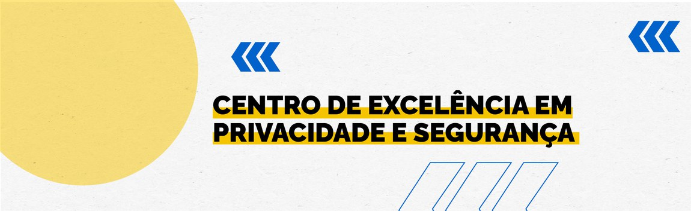

Centro de Excelência em Privacidade e Segurança do Governo Digital
CEPS GOV.BR
Materiais educativos do Centro de Excelência em Privacidade e Segurança
NIST® SP 800-50
Construindo um Programa de Aprendizagem em Segurança Cibernética e Privacidade
NCSC (Reino Unido)
Centro Nacional de Segurança Cibernética: educação e conscientização de usuários
EDUCAUSE
Campanhas de conscientização em segurança
NCSA
Aliança Nacional de Segurança Cibernética
SANS
Recursos para treinamento de conscientização em segurança